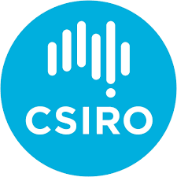
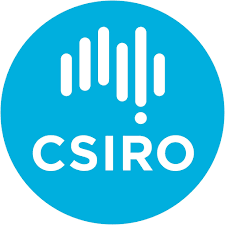

{% include feature_row %}
Quick Links
{% for sop in site.quicklinks %}
{% endfor %}
Logos to add
- AIMS
- CSIRO
- Curtin
- Deakin
- DBCA
- DPIRD WA
- Flinders
- JCU
- NSW DPI
- DEWNR
- UTAS
- UWA
- UniSC
.logo-grid {
display: grid;
grid-template-columns: repeat(auto-fit, minmax(120px, 1fr));
gap: 20px;
align-items: center;
justify-items: center;
padding: 20px;
background: #f9f9f9; /* optional: subtle background */
}
.logo-grid img {
max-height: 60px; /* keeps height consistent */
width: auto;
object-fit: contain;
filter: grayscale(20%); /* subtle uniformity */
transition: filter 0.3s ease;
}
.logo-grid img:hover {
filter: grayscale(0%); /* color pop on hover */
}
 
